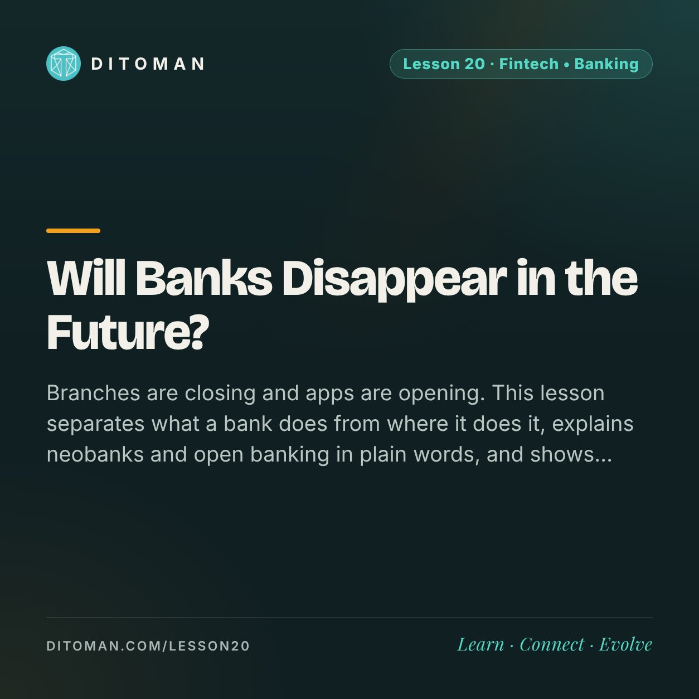

Will Banks Disappear in the Future?
هل ستختفي البنوك في المستقبل؟
Branches are closing and apps are opening. This lesson separates what a bank does from where it does it, explains neobanks and open banking in plain words, and shows which jobs still need a bank behind the screen.
الفروع تُغلق والتطبيقات تُفتح. يفصل هذا الدرس ما يفعله البنك عن المكان الذي يتم فيه، ويشرح النيوبنك والخدمات المصرفية المفتوحة بلغة بسيطة، ويبيّن أي الأعمال ما زالت تحتاج إلى بنك خلف الشاشة.
Lesson Content
محتوى الدرس
Read the lesson in English or Persian.
اقرأ الدرس بالفارسية أو الإنجليزية.
Think about the last time you stood in a bank branch. For many people it was years ago. Opening an account, sending money, paying a bill, even taking a loan now happens on a phone.
So it is fair to ask: if we no longer need the building, do we still need the bank? To answer, we need to look at what a bank actually does. It is not one job. It is four.
01. The four jobs of a bank
Keeping money safe: holding deposits and giving them back on demand.
Moving money: payments, transfers and cards, as in Lesson 14.
Lending: turning many people's short-term deposits into long-term loans for homes and businesses.
Carrying trust: holding a licence, being supervised and standing behind a deposit guarantee, as in Lesson 13.
For a century these four came in one package, from one building. Technology is now separating them, and different companies are competing for each piece.
02. What a fintech is
Fintech is short for financial technology: companies that use software to do one financial job better than before. A payment app, a lending app, an investing app and an insurance app are all fintechs.
Most fintechs do not hold a banking licence. They build the screen you touch, and behind the screen a licensed bank holds the money. You see the app. The bank is the engine underneath.
03. What a neobank is
A neobank is a bank with no branches. Everything, from identity checks to card delivery, happens through an app.
Some neobanks hold their own licence. Others are a brand built on top of a traditional bank. In Iran the well-known examples belong to this second group: Blubank works on Saman Bank, Bankino on Middle East Bank and Wepod on Pasargad Bank.
The model can grow very large. Brazil's Nubank, which was founded in 2013 and began with a single credit card, reported more than 112 million customers in January 2026 and said that made it the largest private financial institution in Brazil by number of customers.
Without branches to pay for, a neobank can charge less and move faster. The questions to ask are the same as for any bank: who holds the licence, and is my deposit covered by a guarantee?
| Traditional bank | Neobank | Fintech app | Personal crypto wallet | |
|---|---|---|---|---|
| Branches | Yes | No | No | No |
| Banking licence | Its own | Its own or a partner bank's | Usually a partner bank's | None |
| Deposit guarantee | Yes, up to a ceiling | Through the licensed bank | Depends on the partner | None |
| Who fixes a mistake | The bank | The bank, through the app | The app and its partner | Nobody |
04. What open banking is
For a long time your bank was the only company that could see your account data. Open banking changes that rule: with your permission, a bank must let another licensed company read your data or start a payment for you, through a secure connection.
The European Union made this law in 2018, and many countries have followed. It is what lets one app show accounts from several banks, or lets a lender check your income in seconds without paper statements.
The important words are "with your permission". Read what an app asks to access, and remove the permission when you stop using it.
05. Where crypto fits
Crypto goes one step further than fintech. A personal wallet moves money with no bank underneath at all, and some applications lend and trade through code alone.
That removes the middleman and, with it, the four protections a bank carries. There is no supervisor, no guarantee and nobody to reverse a mistake. Lessons 13 and 16 covered what that means in practice.
06. So, will banks disappear?
The building is fading. The jobs are not.
Someone still has to keep deposits safe, lend for twenty years and answer to a regulator when things go wrong. Those jobs are hard to do without a licence and capital, which is why even the most modern apps usually stand on a bank.
What is changing is who you deal with. The bank may become something in the background that you rarely see, like the electricity grid behind a socket. The contest of the next decade is over who owns the screen.
What to take from this
A bank does four jobs: keeping, moving, lending and carrying trust.
Fintechs take one job and do it through software, usually with a licensed bank behind them.
A neobank is a bank without branches. Ask who holds the licence and whether deposits are guaranteed.
Open banking lets other apps use your bank data, only with your permission.
Banks are becoming less visible, not less necessary.
تذكّر آخر مرة وقفت فيها في فرع بنك. عند كثيرين كان ذلك قبل سنوات. فتح الحساب وإرسال المال ودفع الفواتير وحتى الحصول على قرض يتم الآن على الهاتف.
فيصبح السؤال: إن لم نعد بحاجة إلى المبنى، فهل نحتاج إلى البنك نفسه؟ وللجواب علينا أن نرى ماذا يفعل البنك فعلًا. عمله ليس واحدًا، بل أربعة.
01. أعمال البنك الأربعة
حفظ المال: يحفظ الوديعة ويردّها متى شئنا.
نقل المال: الدفع والتحويل والبطاقة؛ كما في الدرس 14.
الإقراض: يحوّل ودائع كثيرين قصيرة الأجل إلى قروض طويلة الأجل للبيوت والمشاريع.
حمل الثقة: له ترخيص وتحت الرقابة وخلفه ضمان ودائع؛ كما في الدرس 13.
ولقرن كانت هذه الأعمال الأربعة تُقدَّم في حزمة واحدة من مبنى واحد. والآن تفصلها التقنية عن بعضها وتتنافس شركات مختلفة على كل قطعة.
02. ما التقنية المالية
التقنية المالية (فينتك) اختصار «التكنولوجيا المالية»: شركات تؤدي بالبرمجيات عملًا ماليًا أفضل من قبل. وتطبيق الدفع وتطبيق القروض وتطبيق الاستثمار وتطبيق التأمين كلها فينتك.
ومعظم شركات الفينتك ليس لها ترخيص مصرفي. تبني الصفحة التي نلمسها، وخلف الصفحة يحفظ بنك مرخَّص المال. نحن نرى التطبيق. والبنك هو المحرك الذي يعمل تحته.
03. ما النيوبنك
النيوبنك بنك بلا فروع. كل شيء، من التحقق من الهوية إلى وصول البطاقة، يتم عبر التطبيق.
بعض النيوبنكات لها ترخيصها الخاص. وبعضها علامات تجارية مبنية على بنك تقليدي. ومن الأمثلة المعروفة في إيران من هذه المجموعة الثانية: «بلو بنك» يعمل على بنك سامان، و«بانكينو» على بنك الشرق الأوسط، و«ويباد» على بنك باسارغاد.
وهذا النموذج قد يكبر كثيرًا. فقد أعلن نوبانك البرازيل، الذي تأسس في 2013 وبدأ ببطاقة ائتمان، في يناير 2026 عن أكثر من 112 مليون عميل، وقال إنه صار بهذا الرقم أكبر مؤسسة مالية خاصة في البرازيل من حيث عدد العملاء.
ولأن النيوبنك بلا كلفة فروع فقد يكون أرخص وأسرع. والأسئلة هي أسئلة أي بنك آخر: بيد من الترخيص، وهل وديعتي مشمولة بالضمان أم لا؟
| بنك تقليدي | نيوبنك | تطبيق فينتك | محفظة كريبتو شخصية | |
|---|---|---|---|---|
| فرع | يملك | لا يوجد | لا يوجد | لا يوجد |
| ترخيص مصرفي | خاص به | خاص به أو بنك شريك | عادةً بنك شريك | لا يوجد |
| ضمان الودائع | يوجد، حتى سقف | عبر بنك مرخَّص | حسب البنك الشريك | لا يوجد |
| من يصحح الخطأ | البنك | البنك، عبر التطبيق | التطبيق والبنك الشريك | لا أحد |
04. ما الخدمات المصرفية المفتوحة
لسنوات كان بنكنا الشركة الوحيدة التي تستطيع رؤية بيانات حسابنا. والخدمات المصرفية المفتوحة تغيّر هذه القاعدة: بإذننا، يجب على البنك أن يسمح لشركة مرخَّصة أخرى، عبر اتصال آمن، بقراءة بياناتنا أو بدء دفعة نيابةً عنا.
جعل الاتحاد الأوروبي هذا قانونًا في 2018 وسارت بلدان كثيرة في الطريق نفسه. ولهذا يستطيع تطبيق أن يعرض حسابات عدة بنوك معًا، أو مُقرض أن يفحص دخلنا في ثوانٍ دون كشف حساب ورقي.
العبارة المهمة هي «بإذننا». انظر إلى ماذا يطلب كل تطبيق الوصول، وحين لا تعود تستخدمه ألغِ الإذن.
05. أين الكريبتو في هذه الصورة
الكريبتو يتقدم خطوة على الفينتك. فالمحفظة الشخصية تنقل المال دون أن يكون تحتها بنك أصلًا، وبعض البرامج تقرض وتتداول بالشيفرة وحدها.
وهذا يزيل الوسيط، ومعه الحمايات الأربع التي يحملها البنك. لا رقيب ولا ضمان ولا من يعكس الخطأ. وقد بيّن الدرسان 13 و16 ما يعنيه هذا عمليًا.
06. إذن هل تختفي البنوك؟
المبنى يتلاشى. الأعمال لا.
ما زال لا بد أن يحفظ أحد الوديعة بأمان، ويعطي قرضًا لعشرين سنة، ويجيب الرقيب حين تحدث مشكلة. وهذه الأعمال صعبة بلا ترخيص ورأس مال، ولهذا فحتى أحدث التطبيقات تقف عادةً على بنك.
الذي يتغير هو الطرف الذي نتعامل معه. فقد يصير البنك شيئًا في الخلفية لا نكاد نراه؛ كشبكة الكهرباء خلف المقبس. ومنافسة العقد القادم على من تكون شاشة الهاتف له.
ماذا نستنتج
يؤدي البنك أربعة أعمال: الحفظ والنقل والإقراض وحمل الثقة.
تأخذ شركات الفينتك عملًا واحدًا وتؤديه بالبرمجيات؛ وعادةً خلفها بنك مرخَّص.
النيوبنك بنك بلا فروع. اسأل بيد من الترخيص وهل للوديعة ضمان.
تتيح الخدمات المصرفية المفتوحة لتطبيقات أخرى استخدام بياناتنا المصرفية، بإذننا فقط.
البنوك أقل ظهورًا لا أقل لزومًا.
The next change is already here
التغيير التالي بدأ بالفعل
If apps replaced branches, what replaces the tapping? Lesson 21 looks at artificial intelligence in money: what already works, and where the new risks are.
إذا حلّ التطبيق محل الفرع، فما الذي سيحل محل لمس الشاشة؟ ينظر الدرس 21 إلى الذكاء الاصطناعي في المال: ما الذي يعمل الآن وأين المخاطر الجديدة.
Key Concepts
المفاهيم الأساسية
- The four jobs of a bank
- Fintech
- Neobank
- Banking licence
- Partner bank
- Open banking
- Consent to share data
- Deposit guarantee
- أعمال البنك الأربعة
- التقنية المالية
- نيوبنك
- ترخيص مصرفي
- البنك الشريك
- الخدمات المصرفية المفتوحة
- إذن مشاركة البيانات
- ضمان الودائع
Learning Objectives
أهداف التعلّم
- Name the four jobs a bank does.
- Explain the difference between a fintech app and a bank.
- Say what a neobank is and what to check before using one.
- Explain open banking and the role of your permission.
- Explain why banks are becoming less visible but remain necessary.
- سمِّ أعمال البنك الأربعة.
- اشرح الفرق بين تطبيق الفينتك والبنك.
- قل ما النيوبنك وما الذي يجب فحصه قبل استخدامه.
- اشرح الخدمات المصرفية المفتوحة ودور إذنك أنت.
- اشرح لماذا تقل رؤية البنوك لكنها ما زالت لازمة.
Quiz
اختبار قصير
Check what stayed with you. The answer is under each question.
انظر ماذا علق في ذهنك. الإجابة تحت كل سؤال.
Question 1
السؤال 1
Which of these is one of a bank's four jobs?
أي من أعمال البنك الأربعة؟
A. Setting the price of gold
أ. تحديد سعر الذهب
B. Turning short-term deposits into long-term loans
ب. تحويل الوديعة قصيرة الأجل إلى قرض طويل الأجل
C. Printing banknotes
ج. طباعة الأوراق النقدية
Correct answer: B
الإجابة الصحيحة: ب
Question 2
السؤال 2
Where does the money usually sit when you use a fintech app?
حين تستخدم تطبيق فينتك، أين المال عادةً؟
A. Inside the phone
أ. داخل الهاتف
B. With a licensed bank behind the app
ب. لدى بنك مرخَّص خلف التطبيق
C. With the app store
ج. لدى متجر التطبيقات
Correct answer: B
الإجابة الصحيحة: ب
Question 3
السؤال 3
What is a neobank?
ما النيوبنك؟
A. A bank with no branches
أ. بنك بلا فروع
B. A bank with no customers
ب. بنك بلا عملاء
C. A bank that deals only in crypto
ج. بنك يعمل بالكريبتو فقط
Correct answer: A
الإجابة الصحيحة: أ
Question 4
السؤال 4
Under open banking, when can another company read your account data?
في الخدمات المصرفية المفتوحة، متى تستطيع شركة أخرى قراءة بيانات حسابك؟
A. Whenever it wants
أ. متى شاءت
B. Only when the bank agrees
ب. فقط إن وافق البنك
C. Only with your permission
ج. فقط بإذنك أنت
Correct answer: C
الإجابة الصحيحة: ج
Question 5
السؤال 5
What is the lesson's answer to 'will banks disappear'?
ما جواب هذا الدرس عن «هل ستختفي البنوك»؟
A. Yes, within five years
أ. نعم، بعد خمس سنوات
B. They become less visible, but the jobs remain
ب. ستكون أقل ظهورًا لكن الأعمال تبقى في مكانها
C. No, nothing is changing
ج. لا، لا شيء يتغير
Correct answer: B
الإجابة الصحيحة: ب
Sources
المصادر
- Nubank newsroom: more than 112 million customers (22 January 2026)
- European Commission: Payment services (PSD2) and open banking
- BIS Working Paper 1041: The impact of fintech lending on credit access for US small businesses
- Blubank (Saman Bank)
Company examples describe how each service says it is set up. They are not recommendations, and arrangements can change.
أمثلة الشركات هي ما تقوله كل خدمة عن بنيتها هي. وهذه ليست نصائح وقد تتغير.
نتابع معًاFollow along
New lessons are announced first on Ditoman's channels.
تُعرَض الدروس الجديدة أولًا على قنوات ديتومان.